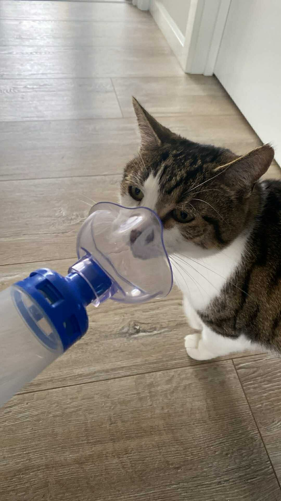

Cat asthma puffer with dinner (Flixotide). One puff for 8 cat breaths.
More puffs if he gets wheezy.

He hates his puffer and he may resist. A good face mushing may be necessary, it's easier if he is sitting in your lap like a baby when you apply it.